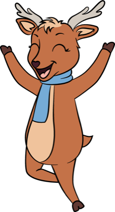
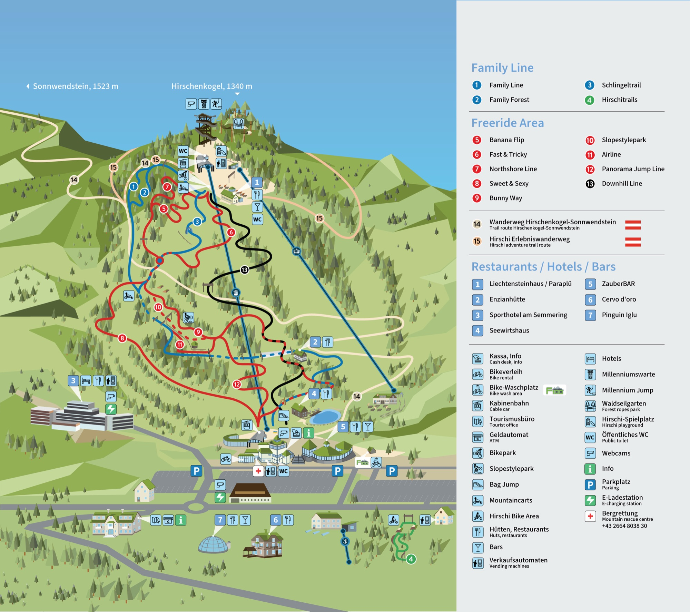
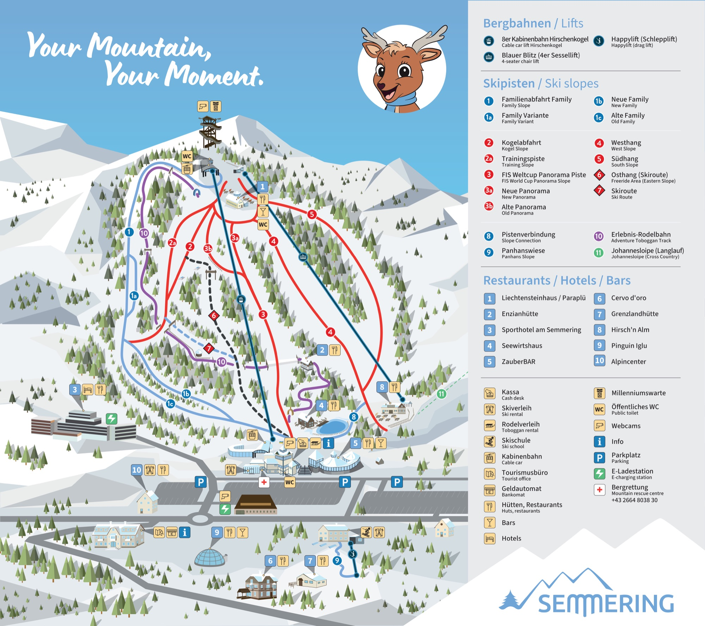

Dein Berg.
1 Stunde von Wien.Your mountain.
1 hour from Vienna.
Skifahren bei
Flutlicht. Bis 21 Uhr.Skiing under
floodlight. Until 9 pm.
Heute am SemmeringToday at Semmering — —
Was jetzt offen ist — jede Zeile führt direkt zur Aktivität. Spontan entscheiden, in 2 Klicks.What's open now — every line links straight to the activity. Decide on the spot, in 2 clicks.
- BikeparkBikepark — alle Flow-Lines offenall flow lines open offenopen →18 km Trails, alle Level — Family Lines bis Downhill.18 km trails, all levels — family lines to downhill. Mehr →More →
- WaldseilgartenRopes park — 9:00–17:009:00–17:00 offenopen →7 Parcours über den Wipfeln, Ausrüstung inklusive.7 courses above the treetops, gear included. Mehr →More →
- LiechtensteinhausLiechtensteinhaus — Sonnenterrasse offensun terrace open offenopen →Panorama-Restaurant auf 1.350 m — Terrasse, Eis & Kaffee.Panorama restaurant at 1,350 m — terrace, ice cream & coffee. Mehr →More →
- MountaincartMountain cart — 9:00–17:009:00–17:00 offenopen →3 km auf drei Rädern — Bergfahrt + Cart-Abfahrt.3 km on three wheels — ride up + cart descent. Mehr →More →
- Hirschi-SpielplatzHirschi playground — Goldwäsche & Kugelbahngold panning & ball run offenopen →Spielplatz, Goldwaschanlage & Kugelbahn — Eintritt frei.Playground, gold panning & ball run — free entry. Mehr →More →
- Millenniumswarte & Millennium JumpMillenniumswarte & Millennium Jump — Plattform & Sprungturm offenplatform & jump tower open offenopen →Rundblick auf 1.340 m (in der Bergfahrt inklusive) — plus 25-m-Sprung für Mutige.Panorama at 1,340 m (included in the ride) — plus the 25 m jump for the brave. Mehr →More →
- Streichelzoo beim LiechtensteinhausPetting zoo at the Liechtensteinhaus — tagsüber offenopen daytime offenopen →Kaninchen, Hühner & Schafe direkt unterm Gipfelrestaurant — füttern erlaubt.Rabbits, chickens & sheep right below the summit restaurant — feeding welcome. Mehr →More →
- Pisten & LifteSlopes & lifts — 9–16 Uhr9–16 offenopen →14 km Pisten, 2 Lifte — täglich präpariert.14 km of slopes, 2 lifts — groomed daily. Mehr →More →
- RodelbahnToboggan run — Tag & Nachtday & night offenopen →3 km bei Flutlicht — Verleih vor Ort.3 km under floodlights — rental on site. Mehr →More →
- NachtbetriebNight skiing — Do–Sa 18–21Thu–Sat 18–21 offenopen →13 km beleuchtet — Flutlicht in Weltcup-Qualität.13 km floodlit — World-Cup-grade lighting. Mehr →More →

All-In Card
Am Berg spürbar kühler als in der StadtNoticeably cooler up here than in the city
Wien ↔ Semmering an einem typischen Sommertag.Vienna ↔ Semmering on a typical summer day.
Vom Tal auf den Gipfel — alles an einem BergFrom valley to summit — everything on one mountain
Sommer: Bergfahrt inkl. Millenniumswarte, Hirschi-Spielplatz & Wanderrouten. Winter: 14 km Pisten, 3 km Rodelbahn, Nachtbetrieb.Summer: the ride up includes the Millenniumswarte, Hirschi playground & hiking routes. Winter: 14 km of slopes, 3 km toboggan run, night operation. Offizielle Panoramakarte ansehen →View the official panorama map →
Mountaincart, Klettern, Jump — was zuerst?Mountain cart, climbing, jump — what first?
3 km bergab auf drei Rädern — ab 130 cm, Helm 5 €.3 km downhill on three wheels — from 130 cm, helmet €5.
Strecke & Karten →Route & tickets →14 Trails, 18 km — von Family Line bis Pro, 20 Jahre Jubiläum.14 trails, 18 km — family line to pro, 20-year anniversary.
14 Trails ansehen →See 14 trails →7 Parcours über den Wipfeln — ab 6 J. & 110 cm, Ausrüstung inklusive.7 courses above the treetops — from age 6 & 110 cm, gear included.
Parcours & Alter →Courses & ages →25 m freier Fall am höchsten Punkt des Berges — ab 14 J., 20–120 kg.25 m free fall at the mountain’s highest point — 14+, 20–120 kg.
Sprung-Infos →Jump info →Spielplatz gratis · Goldwaschen 6 € · Kugelbahn 2 € — direkt an der Bergstation.Playground free · gold panning €6 · marble run €2 — right at the top station.
Spielplatz-Info →Playground info →14 km Pisten, 2 Lifte — Tag & Nacht, VIP-Kabine möglich.14 km of slopes, 2 lifts — day & night, VIP cabin available.
Pisten & Nachtski →Slopes & night ski →3 km bei Flutlicht — längste beleuchtete Bahn Ostösterreichs.3 km under floodlights — eastern Austria’s longest lit run.
Bahn & Verleih →Run & rental →6 Routen + UNESCO-Bahnwanderweg — ganzjährig.6 routes + UNESCO railway trail — year-round.
Routen & Karten →Routes & maps →Der Berg auf der offiziellen KarteThe mountain on the official map


Zum Vergrößern klicken — offizielle Panoramakarte 2025/26.Click to enlarge — official panorama map 2025/26. Oder dreh dich um: 360°-Tour →Or spin around: 360° tour →
Der Berg in BildernThe mountain in pictures

Mit einer Karte mehr erlebenExperience more with one card
Bleib über Nacht — Berg bei Tag, Ruhe bei NachtStay the night — mountain by day, calm by night
Sporthotel: Wellness, Grand View, Liftkarten-Vorteile für Gäste, gratis RUFbus. 8 Minuten zu Fuß zur Bergbahn — Direktbuchung.Sporthotel: wellness, Grand View, lift-ticket benefits for guests, free RUFbus. 8 minutes on foot to the gondola — direct booking.
Zimmer & PaketeRooms & packagesWas ist los am SemmeringWhat's on at Semmering
2006–2026: Jubiläumssaison — Events im Kalender.2006–2026: anniversary season — events in the calendar.
Festival-Gourmetmenü im Grand View.Festival gourmet menu at Grand View.
Damen-Weltcup auf unserer Panorama-Piste.Women's World Cup on our panorama slope.

 Hirschi
Hirschi{kind=link}
{kind=link}
{kind=link}
{kind=link}
{kind=link}
{kind=link}
{kind=link}
{kind=link}
{kind=link}